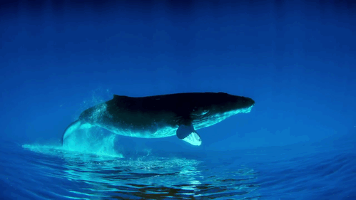
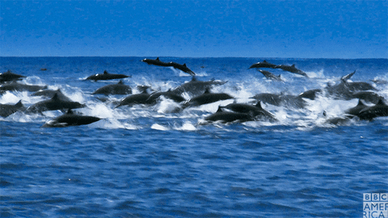
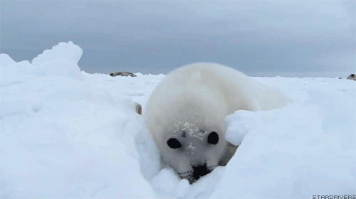

Las ballenas son los animales más grandes del planeta. La ballena azul puede alcanzar longitudes de hasta 30 metros.
Los delfines son conocidos por su inteligencia y comportamiento social. Viven en grupos llamados pods y utilizan el ecolocación.
Estos mamíferos marinos son excelentes nadadores y pueden pasar largos períodos tanto en el agua como en tierra.
